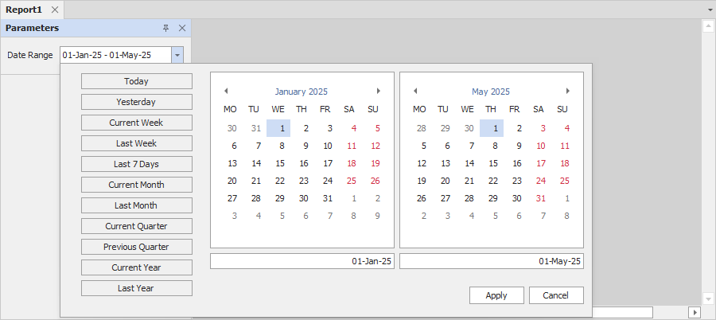
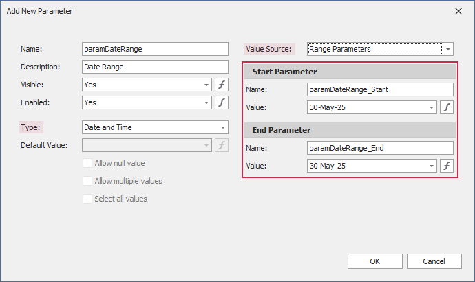
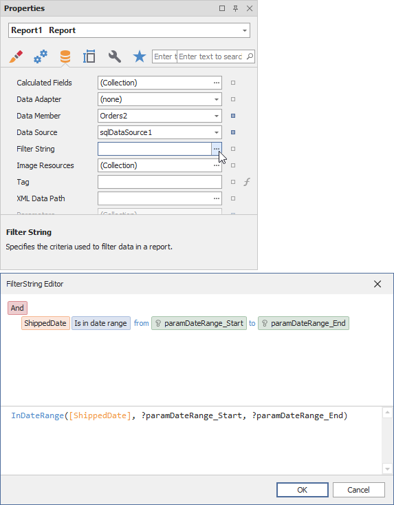
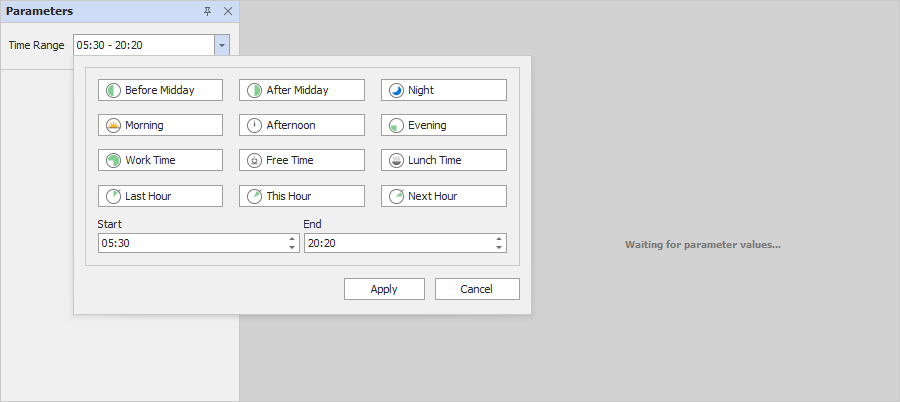
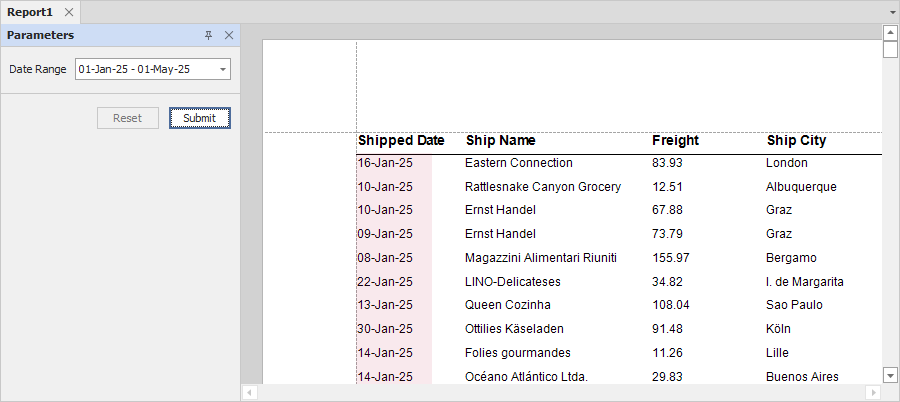

Range Report Parameters
This topic describes how to create date range and time range parameters and filter a report’s data by the specified date or time values.

Create a Range Parameter in the Report Designer
Follow the steps below to add a range parameter to a report in the Report Designer:
In the Add New Parameter dialog, specify parameter options:
- Parameter type: Date and Time, Date, or Time
- Value Source: Range Parameters
The Start Parameter and End Parameter sections that appear allow you to configure options to create a date or time range:

You can change the Name and initial static Value for the Start Parameter and End Parameter. To specify an expression instead of a static value, the Value option's ellipsis button and use the Expression Editor dialog:

Reference the created range parameter. You can reference this parameter in the report’s filter string, in expressions, and in a control's Text property. You can also bind control and data source parameters to report parameters.
We recommend that you use the following functions with range parameters in expressions and filter strings:
InDateRange(Date, FromDate, ToDate)- equivalent to theFromDate <= Date && Value < Dateexpression.InTimeRange(Time, FromTime, ToTime)- equivalent to theFromTime <= Time && Time < ToTimeexpression (including cases where the range spans midnight, such as 23:00-01:00).OutOfTimeRange(Time, FromTime, ToTime)- equivalent to theFromTime > Time || Time => ToTimeexpression (including cases where the range spans midnight, such as 23:00-01:00).
The image below filters the report's data by the following filter string:
InDateRange([ShippedDate], ?paramDateRange_Start, ?paramDateRange_End)
When you switch to the report's Print Preview tab, the Parameters panel displays the newly created range parameter. Click the editor to set a range. The editor type depends on the parameter type:
An editor for "Date" and "Date and Time" range parameters:
An editor for "Time" range parameters:

After you submit start and end values, the report document shows filtered data. The report below shows the ShippedDate field filtered by the date range parameter:
